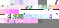

Van de Graff Simulation:This simulation shows the charging of a Van de Graff Generator to a positive potential when there is a stationary positive charge sitting above it (resting on a plastic square). The presence of that charge means that we have to do more work than normal to charge up the generator. If the positive charge above the generator has charge q and the generator has radius a and is charged to a total charge Q, the energy we must put in to charge up the generator is: This total amount of energy is stored in the electrostatic field surrounding the generator after it is charged. As we charge it, there is a Poynting flux outward from the region where we are creating electromagnetic energy. This region is where the charge is being moved against the electric field on the conveyer belt (inside the cylindrical shaft of the generator). This region is where the creation rate per unit volume for electromagnetic energy (-J dot E), is positive. Energy is created there and flows out to fill the space around the generator. This energy flow can be seen in the motion of the electric field lines, which always move in the direction of the Poynting flux. Pressing "Start" after charging the generator releases the stationary positive charge sitting above the generator. If there is enough electrostatic repulsion to overcome gravity, that charge will move upward. We can see that the source of its increasing kinetic energy and gravitational potential energy is the electrostatic field, because again we see the flow of energy out of that field, as indicated by the motion of the electric field lines. Since we have no energy dissipation in the system, the charged particle will eventually come to rest at some distance above the generator, and then start to fall back, transferring gravitational potential energy and kinetic energy back into the electrostatic field, as shown by the field line motion. The graph shows the energy stored in the electrostatic field (not including the self energy term proportional to Q^2) and the sum of the gravitational potential energy and the kinetic energy of the charge. The sum of these is the total energy of the charge: gravitational potential, plus electrostatic potential, plus kinetic energy, and is constant as long as we keep Q constant.
|